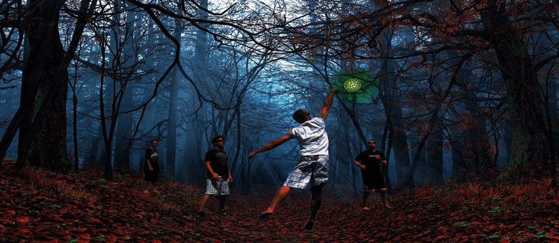
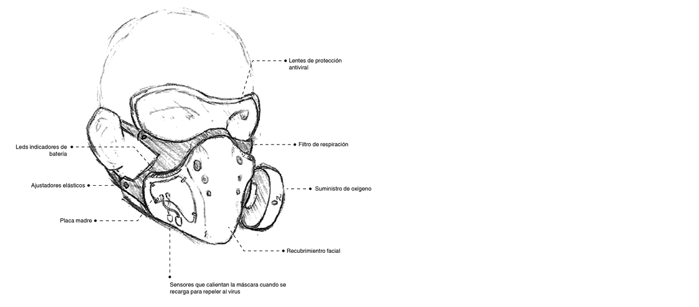

Diseño de Wearables para sobrevivir en escenarios perjudiciales para la salud.
Junto a Ignacio Saavedra buscamos desarrollar posibles wearables para sobrellevar o subsistir con el COVID, un proyecto futuro que se encargue de solucionar la movilidad en el contexto de pandemia y para rediseñar y cuestionarnos cómo van a funcionar los objetos de ahora en adelante. El tema de movilidad abre diversas aristas que nos obligan a replantear ciertas costumbres en nuestra rutina diaria.
Con tinte que ayude a detectar COVID en superficies. Al hacer el aseo o cuando el usuario lo desee, puede aplicar el spray en diversas superficies donde esta reaccionara cambiando de color en el caso de que este en presencia del virus.
Tal como una bomba de humo está pensada para funcionar en zonas especificar que afectar, en este caso con un químico que neutralice el COVID dejando la zona limpia del virus. Este puede ser arrojado en zonas de alto contagio, difícil acceso para así no correr riesgo con personal médico en dichas áreas. 
Esta máscara está pensada para poder salir al exterior sin correr el riesgo de contagiarse con enfermedades virales. Su función consiste en permitir al usuario movilizarse y estar preparado para circular zonas de riesgo viral con el equipamiento adecuado. La máscara contiene un suministro de oxígeno limitado y ligero (que es racargable) para moverse en zonas infectadas. Esto surge de la necesidad de las personas para no desviarse de sus caminos o porque requieren estar en una zona por temas laborales.
El recobrimiento contiene una placa inteligente que avisa el procentaje de batería y duración del oxígeno al ser activado. Además posee un sensor que se calienta cuando la máscara no está en uso y se encuentra cargando. Dicha temperatura disminuye el riesgo de que la superfice esté infectada y repele el virus. Es un pequeño sistema sanitizador. Los lentes de protección son parte de la máscara. Necesitamos equipamientos lo más completos posibles para el bienestar de las personas del futuro.
Los potenciales usuarios podrían ser, en un corto plazo, médicos cuya labor esté basada en la asistencia residencial. Esto disminuiría drásticamente su riesgo sanitario. También personas que requieran movilizarse en zonas infectadas por emergencias o temas laborales, incluyendo profesiones que no han detenido sus jornadas.
En un mediano y largo plazo (por temas económicos y políticos), todas las personas podrían utilizar su propia máscara para vivir en contextos de pandemia. Utilizar una máscara temporalmente sería algo común y fundamental dentro de los equipamientos para la humanidad. Desconocemos qué nos deparará el futuro, es por eso que consideramos importante anticiparnos a los problemas y a re-pensar cómo serán los equipamientos, los dispositivos y las formas de vestirnos y movilizarnos. 